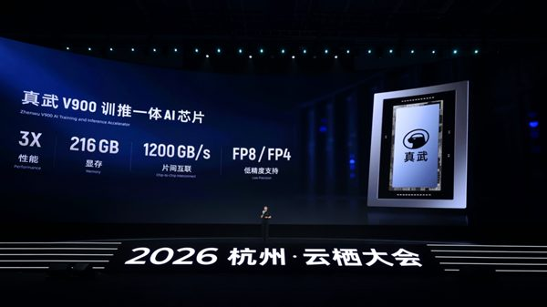

🖥️ AI · 国产芯片 · 明年一季度量产
阿里平头哥真武 V900 明年一季度量产：算力为前代 3 倍、显存 216GB
单集群最高可扩展至 50 万卡；阿里云 AI 云与算力服务单季收入 609.73 亿元、同比增 53%。

阿里巴巴 2027 财年第二季度财报显示，AI 云与算力服务收入达 609.73 亿元、同比增长 53%。财报同步披露，平头哥新一代训推一体 AI 芯片“真武 V900”将于明年一季度量产售卖，官方称其是目前算力性能最强的中国自研 AI 芯片：算力为前代真武 M890 的 3 倍，搭载 216GB 显存，片间互联带宽 1200GB/s，原生支持 FP8、FP4 低精度计算；搭载该芯片的新一代阿里云 AI 超节点单集群最高可扩展至 50 万卡。
来源：新浪科技（快科技）
热度指数 760 万+